Social-emotional printable
Feelings Weather Chart
Download a free printable feelings weather chart for preschoolers ages 3–6. Help children notice emotions, name body feelings, and start gentle conversations.
View free printable →Free for families, teachers & librarians
Download gentle, screen-free activities for ages 3–6. Use them at home, in preschool, in the classroom, or after library storytime—no sign-up required.
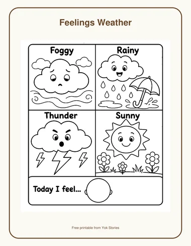
A useful reason to come back
These free printables connect directly to common early-childhood moments: making a friend, handling a mistake, waiting, naming big feelings, trying again, and practicing kindness. Choose one resource, print it, and use only what feels helpful.
Start here
Simple activities for feelings, kindness, friendship, and quiet creative time.
Social-emotional printable
Download a free printable feelings weather chart for preschoolers ages 3–6. Help children notice emotions, name body feelings, and start gentle conversations.
View free printable →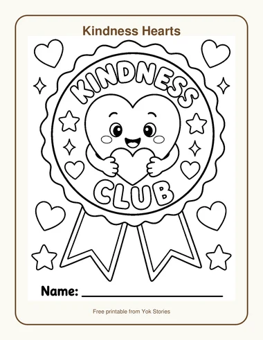
Kindness activity
Download a free kindness hearts printable for ages 3–6. Use it to notice small caring actions, celebrate everyday kindness, and extend storytime.
View free printable →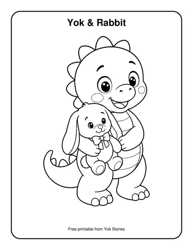
Free coloring page
Download a free Yok and Rabbit coloring page for ages 3–6. A calm, screen-free printable for home, preschool, library storytime, or quiet follow-up.
View free printable →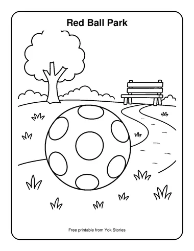
Free coloring page
Download a free park and red ball coloring page for preschoolers ages 3–6. A screen-free activity for friendship, play, and storytime follow-up.
View free printable →Read, pause, talk
Printable follow-up prompts for each of the ten original Yok stories, created for homes, classrooms, and library storytime.
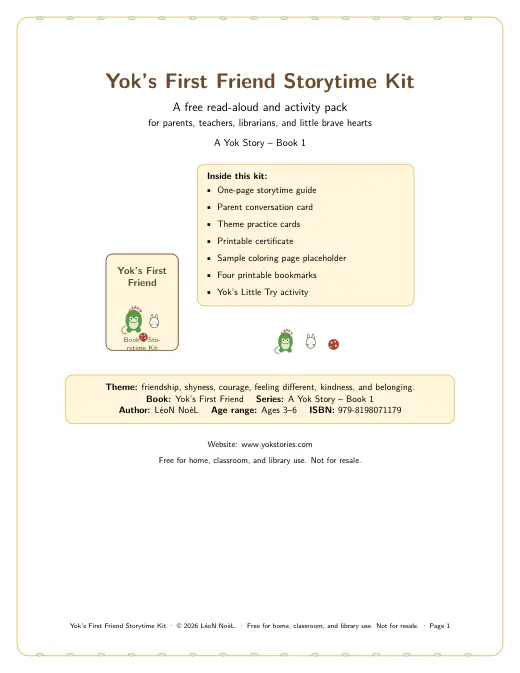
Free storytime kit
Download a free Yok’s First Friend storytime kit for ages 3–6 with gentle prompts and follow-up ideas for talking about friendship, shyness, and joining play.
View free printable →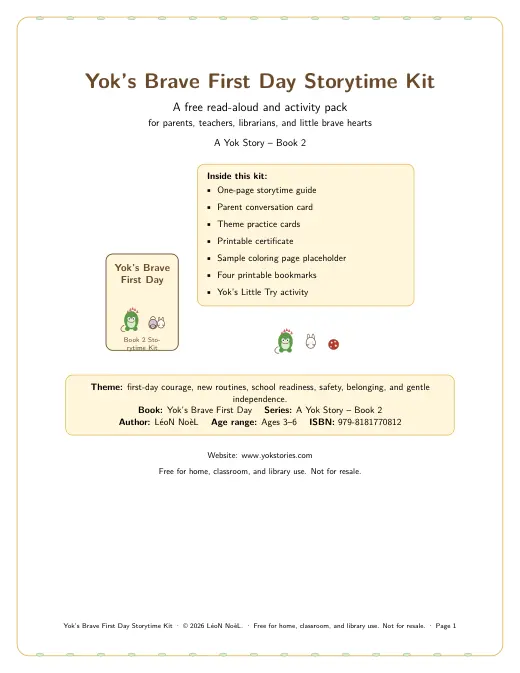
Free storytime kit
Download a free Yok’s Brave First Day storytime kit for ages 3–6 with gentle prompts and follow-up ideas for talking about starting school, new places, and brave…
View free printable →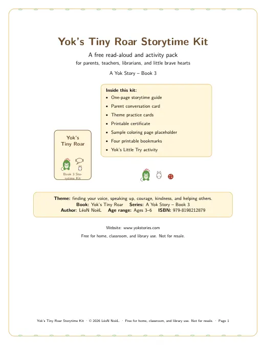
Free storytime kit
Download a free Yok’s Tiny Roar storytime kit for ages 3–6 with gentle prompts and follow-up ideas for talking about finding a voice, communicating, and asking…
View free printable →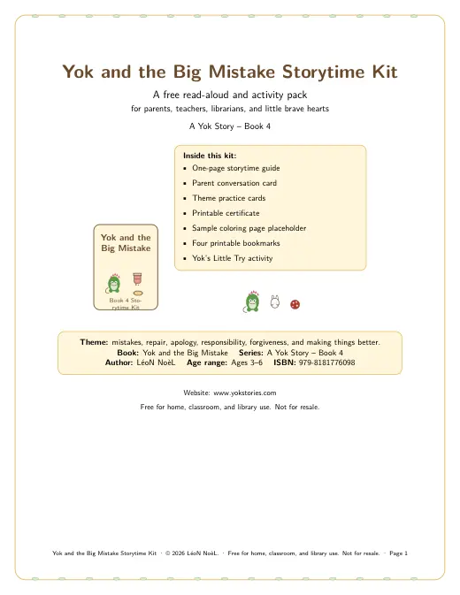
Free storytime kit
Download a free Yok and the Big Mistake storytime kit for ages 3–6 with gentle prompts and follow-up ideas for talking about mistakes, apology, responsibility,…
View free printable →Free storytime kit
Download a free Yok and the New Kid storytime kit for ages 3–6 with gentle prompts and follow-up ideas for talking about welcoming a new child, empathy, and…
View free printable →Free storytime kit
Download a free Yok’s Kindness Club storytime kit for ages 3–6 with gentle prompts and follow-up ideas for talking about kindness, empathy, and small caring actions.
View free printable →Free storytime kit
Download a free Yok and the Little Not-True storytime kit for ages 3–6 with gentle prompts and follow-up ideas for talking about honesty, truth-telling, and repair.
View free printable →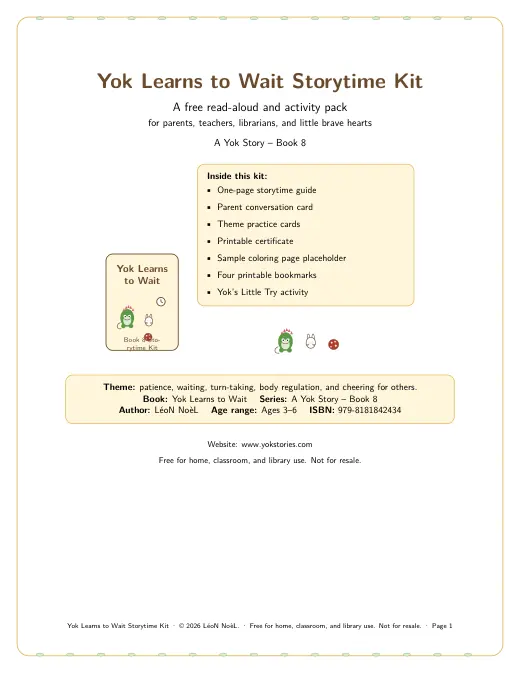
Free storytime kit
Download a free Yok Learns to Wait storytime kit for ages 3–6 with gentle prompts and follow-up ideas for talking about patience, waiting, and simple regulation…
View free printable →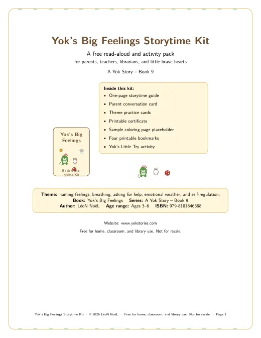
Free storytime kit
Download a free Yok’s Big Feelings storytime kit for ages 3–6 with gentle prompts and follow-up ideas for talking about emotion words, body clues, and big feelings.
View free printable →Free storytime kit
Download a free Yok Tries Again storytime kit for ages 3–6 with gentle prompts and follow-up ideas for talking about perseverance, frustration, and trying in…
View free printable →Everyday moments, practical words
Six free companion kits for birthdays, noise, lost treasures, restaurants, bad dreams, and trying something new.
Birthday expectations, disappointment, flexible thinking, friendship, and finding meaning when plans change.
View & download →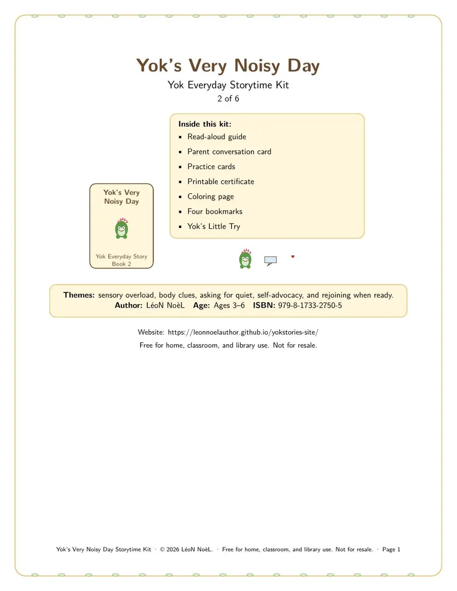
Sensory overload, body clues, asking for quiet, self-advocacy, and rejoining when ready.
View & download →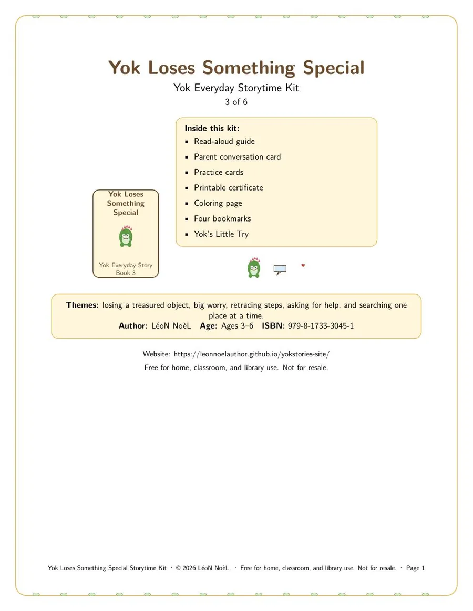
Losing a treasured object, big worry, retracing steps, asking for help, and searching one place at a time.
View & download →Making choices, waiting, unfamiliar food, asking for small changes, movement breaks, and restaurant confidence.
View & download →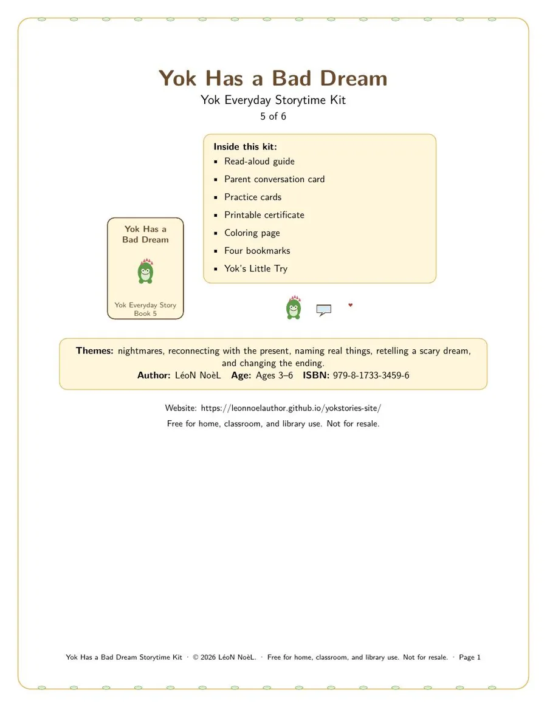
Nightmares, reconnecting with the present, naming real things, retelling a scary dream, and changing the ending.
View & download →Trying something new, mixed feelings, tiny steps, stopping when needed, and choosing the size of a challenge.
View & download →Two languages, one shared story
Six free bilingual companion kits with paired English–French prompts and practice cards for ages 3–6.
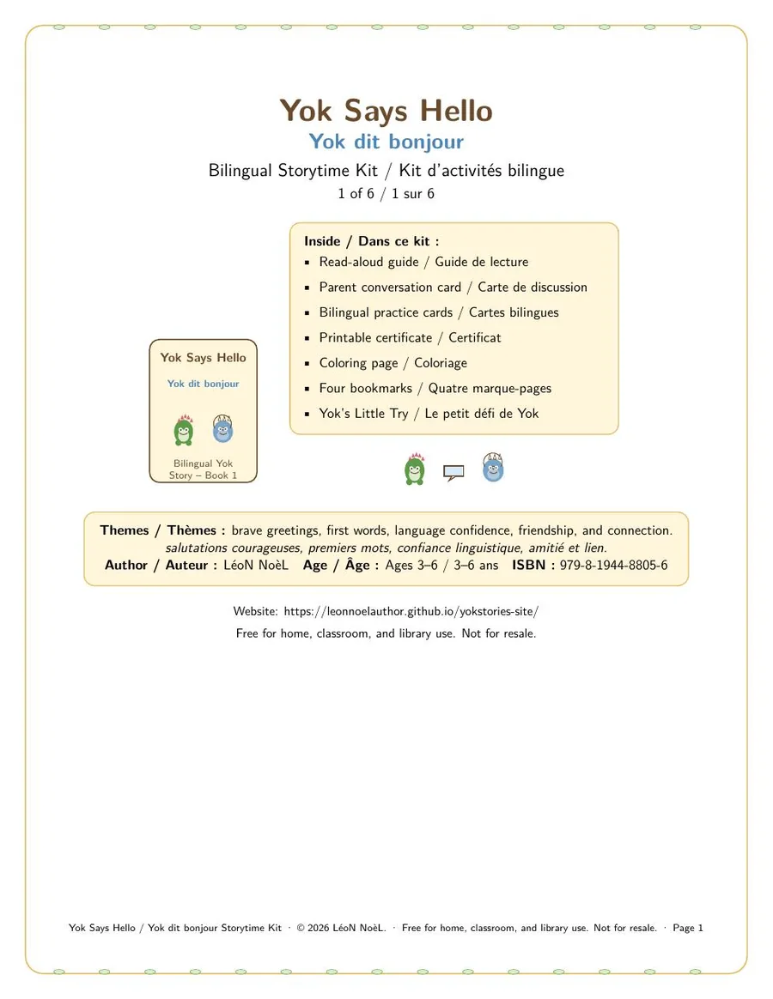
Brave greetings, first words, language confidence, friendship, and connection.
View & download →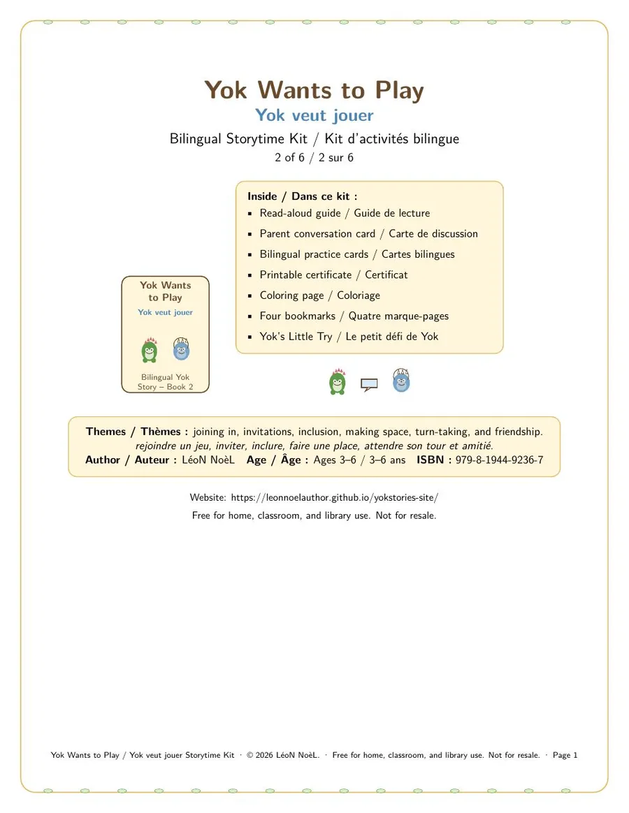
Joining in, invitations, inclusion, making space, turn-taking, and friendship.
View & download →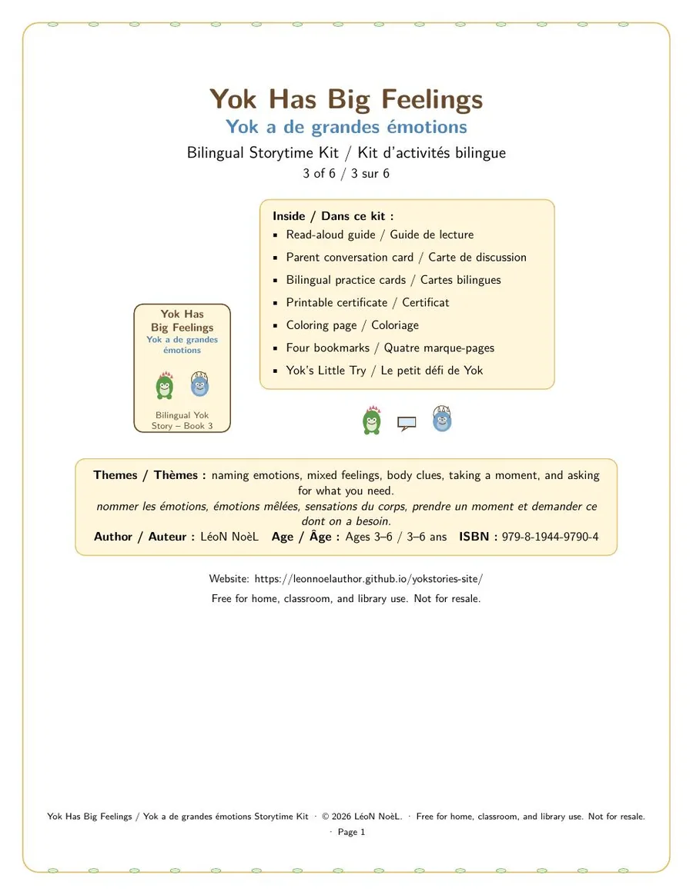
Naming emotions, mixed feelings, body clues, taking a moment, and asking for what you need.
View & download →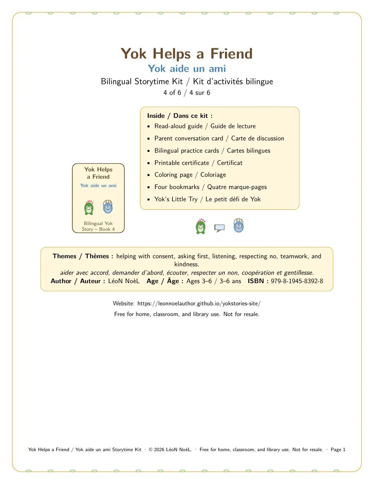
Helping with consent, asking first, listening, respecting no, teamwork, and kindness.
View & download →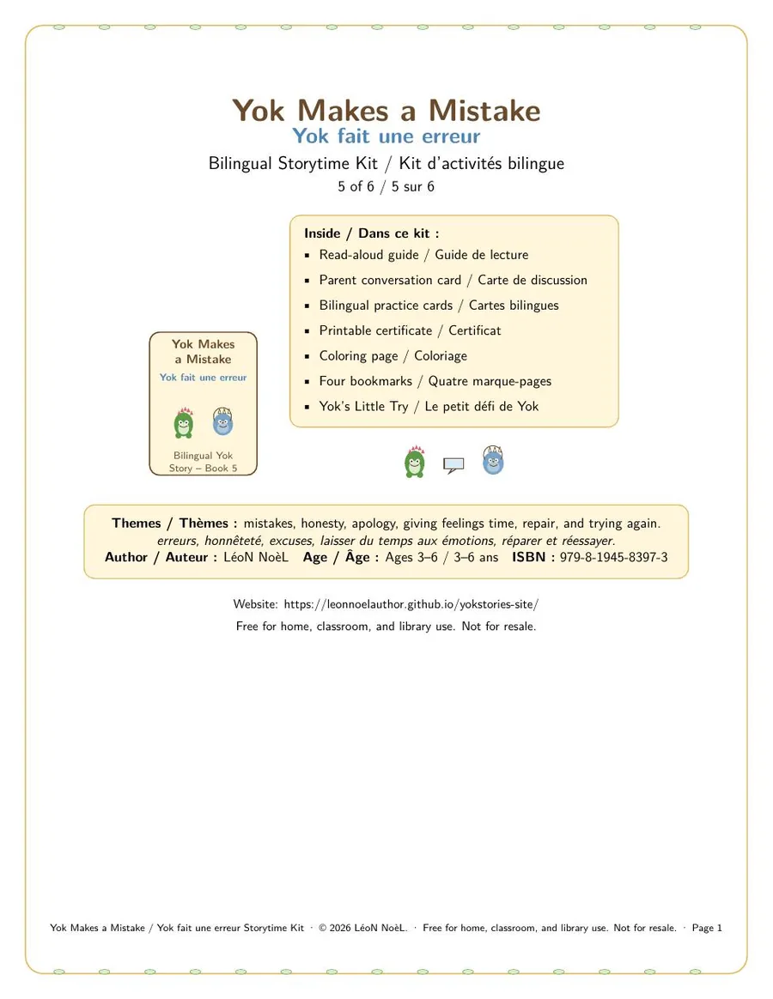
Mistakes, honesty, apology, giving feelings time, repair, and trying again.
View & download →Language confidence, asking for repetition, slowing down, imperfect pronunciation, friendship, and brave communication.
View & download →Color and revisit
Screen-free creative follow-ups that let children return to a story theme while their hands stay busy.
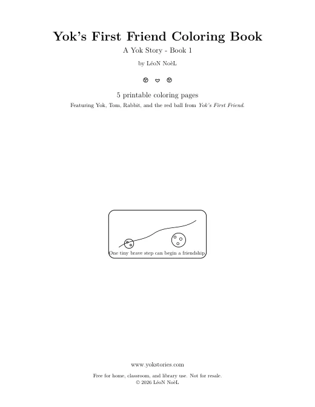
Free coloring book
Download a free printable Yok’s First Friend coloring book for ages 3–6. A screen-free way to revisit friendship, shyness, and joining play after reading.
View free printable →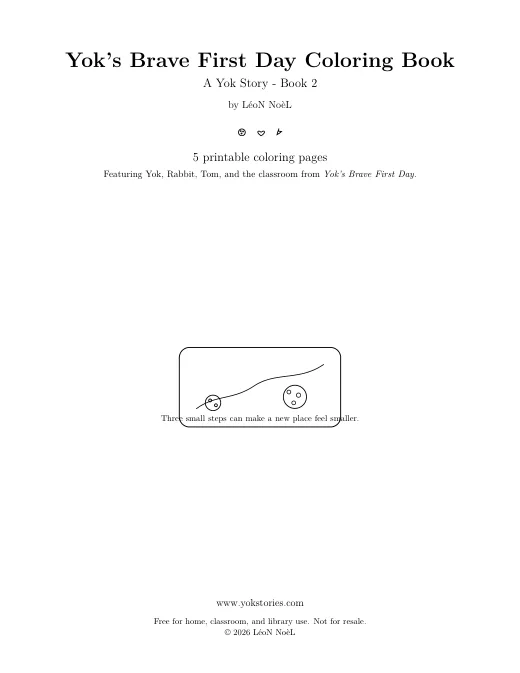
Free coloring book
Download a free printable Yok’s Brave First Day coloring book for ages 3–6. A screen-free way to revisit starting school, new places, and brave small steps after…
View free printable →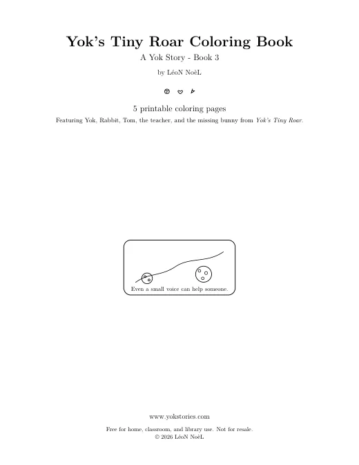
Free coloring book
Download a free printable Yok’s Tiny Roar coloring book for ages 3–6. A screen-free way to revisit finding a voice, communicating, and asking for help after reading.
View free printable →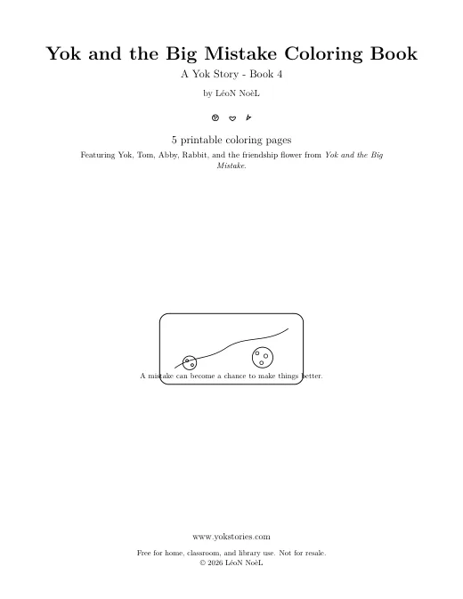
Free coloring book
Download a free printable Yok and the Big Mistake coloring book for ages 3–6. A screen-free way to revisit mistakes, apology, responsibility, and repair after…
View free printable →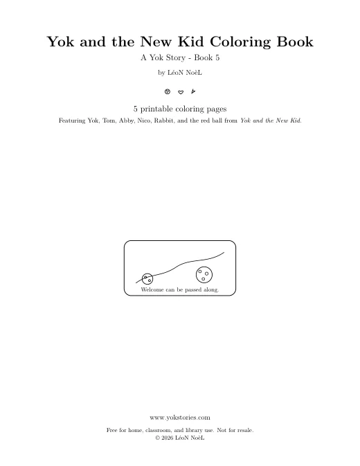
Free coloring book
Download a free printable Yok and the New Kid coloring book for ages 3–6. A screen-free way to revisit welcoming a new child, empathy, and inclusion after reading.
View free printable →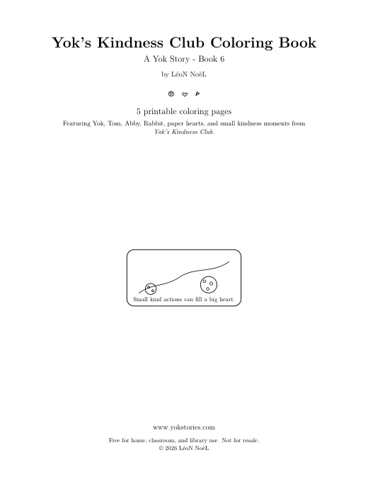
Free coloring book
Download a free printable Yok’s Kindness Club coloring book for ages 3–6. A screen-free way to revisit kindness, empathy, and small caring actions after reading.
View free printable →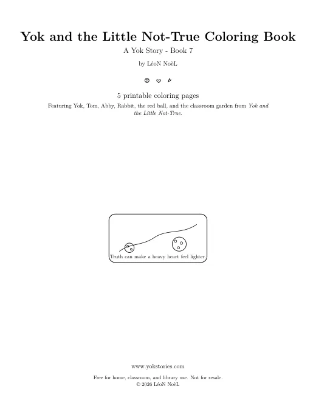
Free coloring book
Download a free printable Yok and the Little Not-True coloring book for ages 3–6. A screen-free way to revisit honesty, truth-telling, and repair after reading.
View free printable →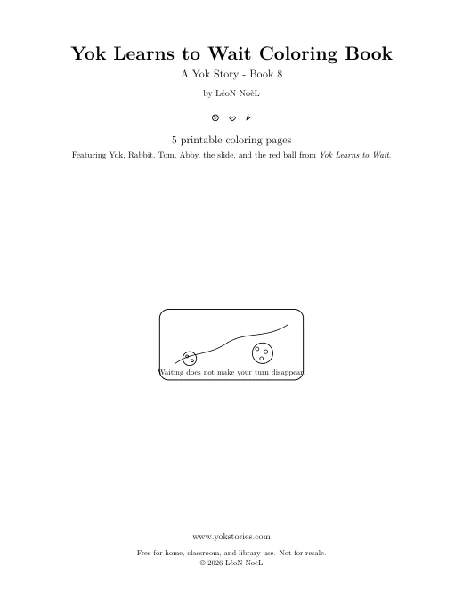
Free coloring book
Download a free printable Yok Learns to Wait coloring book for ages 3–6. A screen-free way to revisit patience, waiting, and simple regulation tools after reading.
View free printable →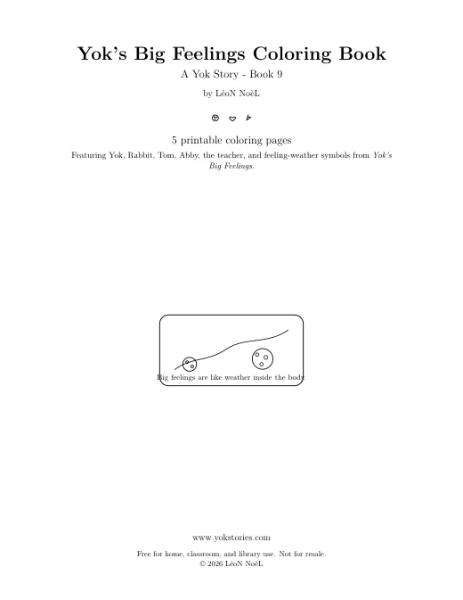
Free coloring book
Download a free printable Yok’s Big Feelings coloring book for ages 3–6. A screen-free way to revisit emotion words, body clues, and big feelings after reading.
View free printable →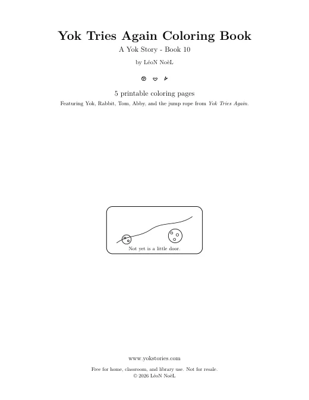
Free coloring book
Download a free printable Yok Tries Again coloring book for ages 3–6. A screen-free way to revisit perseverance, frustration, and trying in small steps after…
View free printable →Using the library
No. Each resource page links directly to its free PDF download.
Most are designed around the same ages as the original Yok stories—roughly ages 3–6—with grown-up support as needed.
No. The stand-alone activities work independently. Storytime kits and coloring books are most meaningful when paired with their related Yok story.